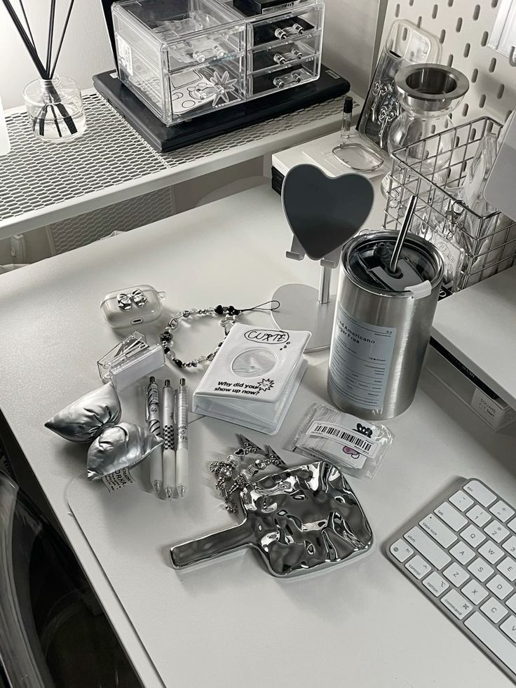

Sleek and shiny.
Silver is an underrated and exquisite color.

My favorite color is silver. Silver pairs well with many other colors: black, white, gold, teal, emerald green, brown, and so many other neutral shades. It is not only a precious color, but it also exists as a form of currency that is commodity money, which holds value in the asset itself. Silver is used in not only jewelry, but also in solar panels, water filtration, tableware, and many other valuable technology and everyday objects.